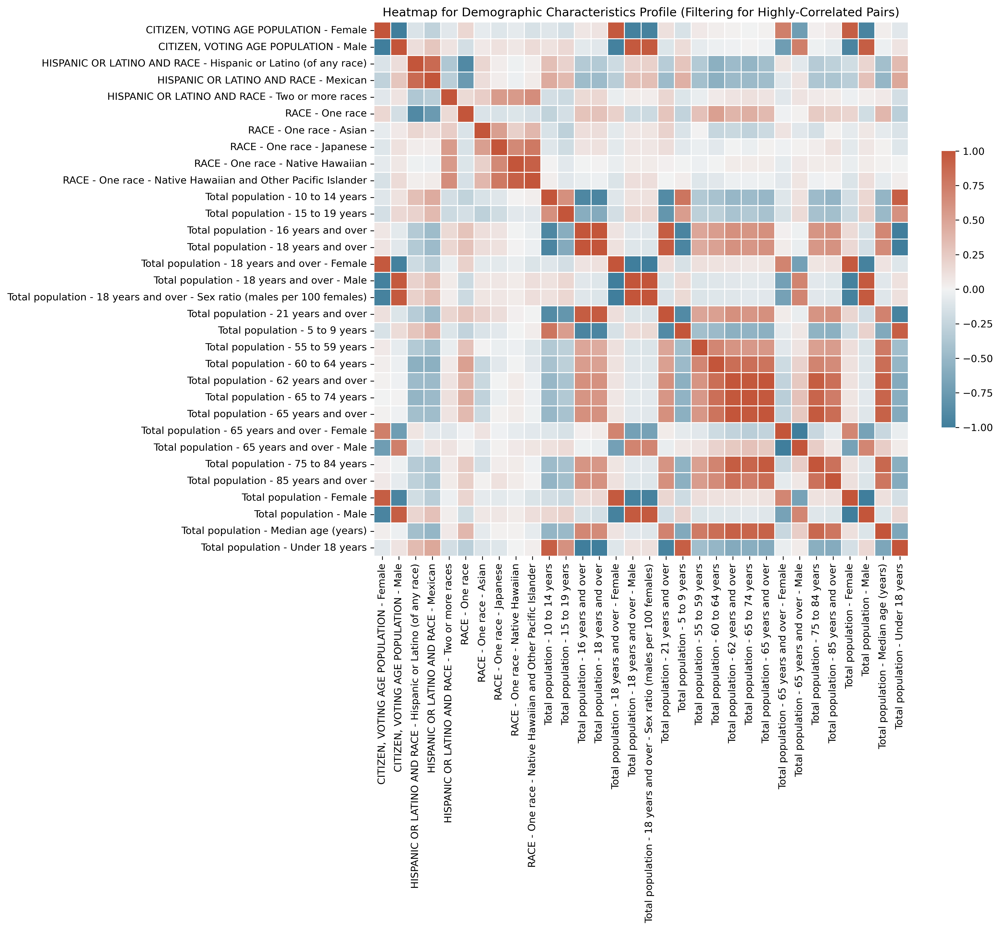
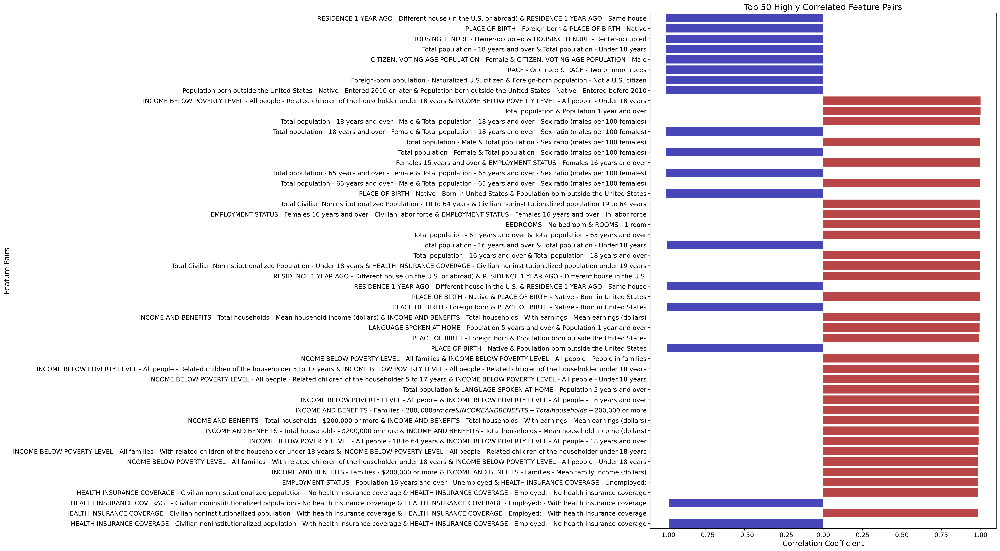

The New Demographic Battlefield
Top Dem & GOP Characteristics - Predict 2022 midterm margins
A Post-Redistricting Analysis of Partisan Lean and 2022 Midterm Voter Behavior in U.S. Congressional Districts

Strategic Insights for Democratic Congressional Campaigns Using American Community Survey Profiles on Demographics, Economics, Housing, and Social Characteristics
Introduction
The purpose of this project is to analyze and understand, on a more granular level, the constituents of the newly settled congressional district landscape of the 2020’s. I wanted to consider more than just age, race, and education, so I incorporated 450 unique features for every district in the US (from employment industry, to daily commute time, to heating fuel source, and many, many others).
I modeled these characteristics to predict a district’s Partisan Voter Index scores (a measure of its partisan lean) and then remodeled to predict 2022 midterm voter behavior.
I hope that my analysis and insights can help inform Democratic strategy to help win back the US house and keep it for the decade ahead.
Background Information
American Community Survey
On January 26, 2023, the Census Bureau released the 2021 ACS data tables within the geographic boundaries of the 118th Congress. This release is critical for determining Democratic electoral strategies in the decade ahead; following the 2020 census, redistricting reshaped virtually every U.S. district, making these data profiles our first deep dive into the redefined district landscapes. While future legal decisions may alter some district boundaries, the majority will likely remain stable over the next decade.
The American Community Survey is a sample of approximately 3.5 million addresses each year, and takes a much more comprehensive look at the characteristics of the U.S. population, as compared to its cousin the Decennial Census. The Census Bureau releases this data across four Data Profile tables, offering a clear and detailed view of each district’s constituents:
- Social Profile: Encompasses household dynamics, educational pursuits, veteran and disability status, migration patterns, linguistic diversity, and digital connectivity.
- Economic Profile: Sheds light on workforce dynamics, commuting patterns, occupational and industrial distributions, income levels, health insurance coverage, and poverty rates.
- Housing Profile: Provides insights into housing occupancy and characteristics, ownership versus renting, vehicle availability, energy sources, and housing costs.
- Demographic Profile: Details the demographic makeup in terms of gender, age, racial and ethnic backgrounds, and the citizen voting-age population.
These profiles collectively offer a comprehensive overview of each district’s characteristics, crucial for understanding the evolving electoral landscape in the wake of recent redistricting.
Cook Partisan Voter Index Scores
I am going to spend a lot of time talking about each district’s PVI-score, so it’s helpful to understand what it actually represents and how it was determined.
The Cook PVI measures how partisan a district or a state is compared to the nation as a whole. A Cook PVI score of D+2, for example, means that in the 2016 and 2020 presidential elections, that district performed an average of two points more Democratic than the nation did as a whole, while an R+4 means the district performed four points more Republican. As of 2022, the calculation of PVI-scores are weighted more heavily to the most recent Presidential Election, instead of averaging the previous two cycles.
Because “R+3” and “D+2” are not actual numbers for data analysis, I converted PVI to sit on a scale where Republican PVI’s are negative and Democratic PVI’s are positive, becoming “-3”and “2,” respectively. More information on PVI can be found here.
Data Used
- American Community Survey data for the 118th congressional districts can be accessed here.
- PVI score data was sourced from the Cook Political Report.
- 2022 Midterm Results were sourced from The Daily Kos.
- Information about who controlled the redistricting process in each state was compiled by the Brennan Center for Justice.
QUICK NOTE:
I don’t want to bore you with the data wrangling process, but it’s worth noting that a) it was a monster of a task, but more importantly b) when the 2022 ACS data is released and the state legislative districts data is released, my wrangling process will work with almost no changes to the underlying code. Anything that is changed year to year between ACS surveys is released here, so adjustments can be pinpointed easily.
Data Wrangling Notebook
Follow along step by step with how I wrassled the data into submission in my data wrangling notebook.
Exploratory Data Analysis
Distribution
First, I wanted to get a sense of how the newly shaped districts were distributed according to their partisan-ness. Distributing every district in the US based on PVI-score shows this interesting shape:

Well, that certainly doesn’t look normal! (in the statistical distribution sense of “normal”, but also in the common sense department). So let’s dive in!
The median district in the United States is around -1, which is a Republican +1 district, meaning half of the districts in the US are more Republican and half are more Democratic than that point. Pretty close to 0, so I’m not mad at that.
But, right off the bat, we see a huge imbalance and large concentration of districts between the R+10 to R+20 range,(-10 to -20 in my conversion). For context, Cook considers everything beyond the 10-point range to be non-competitive “Solid” districts.
Of course, my initial thought on seeing this is:
‚ÄúWho could possibly be responsible for creating this huge concentration of districts that are just out of competitive reach? ü§î And why is the answer almost certainly ‚ÄòRepublicans gerrymandering‚Äôü§®???
So, I set about to confirm my priors. The Brennan Center for Justice broke down redistricting in every state into the following categories:
- GOP-Controlled Redistricting (177 seats)
- Democratic-Controlled Redistricting (49 seats)
- Split-Control (2 seats)
- Court-Ordered Maps (91 seats)
- Independent Commissions [non-partisan] (82 seats)
- Political Commissions partisan appointees from both parties
- and At-Large Districts (6 seats/states)
Now, when we look at the same distribution graph color-coded by type of redistricting, I have a feeling we should see something pretty notable in that -10 to -20 range.


It’s a little hard to focus with all those colors going on in the same graph, so let’s break it down into its component parts:

Observations:
Courts & Commissions: As far as distribution goes, courts and commissions have the most natural spread, which makes sense given their priority to create fair districts. The median of the commissions is between 6-8, but this also makes sense given that states with commissions tend to be more democratic overall (CA, CO, MI, AZ, HI, ID, MO, NJ, WA)
GOP-Controlled Redistricting: Republicans had the opportunity to draw the district lines in an astonishing 41% of all seats in Congress (177 total). As awful as that is for democracy and discourse overall, it makes it pretty easy to visually see the manipulation of district-drawing to create electoral advantages.
- The median district is R+12, so, solidly safe districts for Republicans, but even more interesting is the immediate dropoff of districts exceeding R+20, indicating “cracking”, where, once a Republican district is safe enough, they can crack into more democratic areas like urban centers.
- And then notice the second hump of GOP-drawn democratic districts in the D+20 region, indicating “packing”, where democratic voters are packed into one district to dilute their voting power
Democratic-Controlled Redistricting: The median district is D+7, within the competitive zone. Perhaps Democrats would see more GOP-type drawing behavior if we had more opportunitis to hold the pen, but at 49 seats total, our ability to push back on the GOP’s advantage is severely limited.
Heatmapping
Because I only eliminated in the data wrangling/cleaning process those features that were exactly duplicated within and between data profiles, I wanted to get a sense of the extent of multicollinearity of my features and chose to do that through heatmapping.
Since my data also has high dimensionality (450 unique features), I will only share here one of my heatmaps corresponding to the demographic profile highlighting highly correlated features.  Here it’s easy to see many of the features are highly correlated, and many of those relationships make sense intuitively. So let’s look at only the top 50 highly correlated pairs of features in the graph below (open in new window, Census Bureau characteristic titles can be very long): 
Some of the features have an almost exact negative correlation, such as “Place of Birth - Foreign Born” and “Place of Birth - Native Born”, but there are also some highly correlated pairs that don’t exactly hit perfect correlation such as “Total Population” and “Total Population 1 year and over”.
EDA Notebook
To take a more detailed look at the EDA process, especially a deeper look into all the heatmapping, follow along in my EDA Notebook.
EDA Conclusions: 1) The distribution of districts is skewed by Republican gerrymandering. 2) My data has high dimensionality (450 features), high multicollinearity (closely related features), and low observations (only 435 districts in the U.S). 3) To handle the high dimensionality and multicollinearity of my data, I am choosing to focus on regressors that are adept at handling these challenges.
Models and Analysis
Regressors
Given the high dimensionality and multicolinearity of my data, I chose to only focus on regressors that could handle these challenges, such as L1 and L2 regularization regressors, and Ensemble Learning models.
Although I had some decent accuracy with Neural Networks and Principal Component Regression, eventually I sacked those methods because it’s not possible to extract the features and associated weights for analysis.
Models Assessed:
- Ridge
- Lasso
- ElasticNet
- RandomForestRegressor
- ExtraTreesRegressor
- GradientBoostingRegressor
- Modeling on PVI:
After several rounds of parameter tuning on all of the above models, I sorted on highest performance R²-Score on the test set. In all instances, the top 5 performing models were Ridge Regression, signaling its efficacy in managing multicollinearity within the high dimensional demographic feature set.

Specifically, Ridge with MinMax Scaling and L2-regularization alpha of 1 performed best.
The leading model also has the lowest RMSE at 4.365, meaning our model can predict the PVI of a district within ±4.365 points. That’s pretty great!
The collective performance of these models underscores Ridge Regression’s suitability for demographic-based PVI score prediction, with significant implications for targeted campaign strategies.
- Modeling on 2022 Midterm Margins:
Using the same process and models as in the PVI modeling, after several iterations of parameter tuning, my highest performing models were:
Although ElasticNet with MinMax Scaler had the highest R²-Score on the test set, I chose to use the Lasso with MinMax scaler alpha 0.1 as my best model based on the other metrics.
The ElasticNet model seems to be significantly overfitting on its training data, while the Lasso model shows more consistency between Mean CV Score, R2 Test Score, and R-squared Training data. Also, the difference in my most important metric (RMSE) is negligible.
Analysis:
The R²-Scores on the test set for predicting midterm voter behavior were much worse than for predicting on PVI, and further, the RMSE for midterm margin came in at 10.8, meaning that with this model we could only predict the marginal outcome of the race within ±11 points!
Surely there are many reasons for these models’ poor predictive performance in the midterms, but I think there are a few main reasons:
First, participation in midterm elections is much lower than in Presidential years, giving way to large fluctuations in results across the U.S. in expected outcomes.
Second, acknowledging that there are fewer split-ticket voters than there used to be, it still exists; PVI is a reflection of how a district voted for the president, not necessarily how they voted for their congressional representative.
Finally, all politics is local! Candidate quality matters, especially in midterm cycles. Check out the local situation in every district in the U.S. on my streamlit app.
Results
PVI: It turned out that only modeling on the demographic features of a congressional district proved remarkably accurate in predicting its partisan lean, PVI. Without considering ground game tactics like GOTV efforts, percent eligible voters registered, etc. it turns out that demographics alone can account within ±4.365 points for previous voting behavior in the past 2 presidential cycles (which PVI is a measure of).
2022 Results: However, demographics were far less predictive of midterm voter behavior, only coming within ±10.8 points of predicted margins in the 2022 congressional matchups.
But despite the mediocre performance of my model for predicting midterm voter behavior, my overall goal was to find insights into the most important demographic features that were influential in 2022. On that metric, the features my model identified as most influential should speak to and help identify overall midterm trends.
Top Democratic Features for Predicting PVI
Top Republican Features for Predicting PVI

Notes on PVI Features
Things we already knew about Democrats:
The #1 indicator of previous Democratic presidential voting behavior was “Race - One Race - Black or African American”
Other Features We Expected: “Industry: Professional, Scientific, and Management”, “Female Householder”, “Educational Attainment: Graduate or Professional Degree”
Surprising Features: ‚ÄúAncestry: Swiss‚Äù - who knew ü§∑? & ‚ÄúHouse Heating Fuel: Wood‚Äù
Though these features may seem surprising at first glance, what it likely reflects is a very Democratic district with an outsized portion of the population exhibiting that characteristic (Looking at you, Vermont, with all that wood-burning liberalism)
Things we already knew about Republicans:
The #1 indicator of previous Republican presidential voting behavior was “Race - One Race - White”
Other Features We Expected: “Industry: Agriculture, Forestry, Fishing, Hunting, and Mining”, “Commuting to Work - Car Truck or Van - Drove Alone” (forget carpooling, libs!), “Educational Attainment: High School Graduate”
I honestly don’t find too much surprising about about this feature-set, but I do find it a little funny that one of the big indicators of Republican voting behavior is “Race - Two or More Races - White and American Indian”. Anecdotally, I grew up in an extremely Republican and “country” Southern household and my dad always said we were part Cherokee somewhere down the line… According to 23&Me, this was in no way true.
Top 2022 Midterm Democratic Features
Most Influential Democratic Features for Predicting 2022 Midterm Voting Behavior
Top 2022 Midterm Republican Features
Most Influential Republican Features for Predicting 2022 Midterm Voting Behavior
Notes on 2022 Midterm Features
By the very nature of how Lasso Regression works, L1-regularization combats overfitting by shrinking the parameters towards 0, eliminating altogether most features, especially in a high-dimensional training set like mine. So the results we see for the midterm characterization features are only the most significant features to the model.
Observing the changes in feature-importance between PVI (previous two presidential cycles) and 2022 midterm behavior, some significant results can be gleaned, which I will go over in the next section.
Recommendations and Conclusions
There are some extremely significant results that could impact Democratic strategy going into 2024:
- “Female Householder, No Spouse Present” shot up to the 2nd-most significant factor in predicting midterm Democratic Voting Behavior. I believe this highlights the impact of the Dobbs decision in activating turnout amongst women.
- “Race - One Race - Black or African American” dropped significantly from the #1 slot in predicting PVI, to only the 9th-most significant factor in predicting 2022 midterm voter behavior (!!!). This could be due to several reasons, like the instability in predicting 2022 Congressional results, lower turnout in midterm years, or higher activation of other voters, e.g. Female NSP in the wake of Dobbs. However, it is worth putting extra attention into this heading into the next cycle.
- “Married-Couple Households” were the 2nd most important feature in predicting midterm Republican-voting behavior. Considering the Alabama Supreme Court ruling involving In Vitro Fertilization, this presents a significant opportunity to pry away some of these voters. 42% of U.S. adults have had or know someone who has undergone fertility treatment (Pew), and although Alabama has tried to walk back the damage in the IVF-ruling, other states continue to advance fetal personhood bills across the country.
Future Work
- 2022 ACS Results: When the Census Bureau releases their 2022 ACS Results, I will be able to wrangle the data again to see any changes in feature weights, but also get a glimpse into how districts are changing year-over-year.
This can provide important strategic insight to congressional candidates when considering characteristics of the district that are increasing or decreasing.
- State Legislative Geographies: The ACS demographic characteristics for state legislative districts have already been released. This could potentially drive huge increases in performance to my modeling given the low number of observations in my current dataset. While there are only 435 U.S. Congressional Districts, there are thousands of state legislative districts.
The only challenge here will be the tedious process of tracking down every election result in decentralized State election result reporting systems.
- Expand Feature Engineering to Enhance Predictive Performance: While I only focused on purely demographic features when modeling in this project, there are tons of ways to feature engineer information into the dataset that we already know. Such things as: Regionality, Redistricting Control, Likely Voters, Previous Turnout Metrics, and Using PVI as a Feature for the Midterm Predictions.
(I actually already did that last one, and PVI as a feature greatly enhanced the predictive ability of the models for the midterms. However, it overpowered the demographic features by a lot and I wanted to focus my analysis solely on “demographics as destiny”).